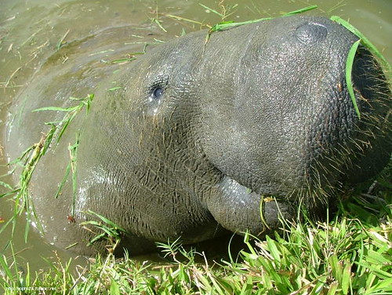

My Favorite Things

My Favorite Foods
- Pizza
- Ice Cream
- Paté
- Brussel Sprouts
- Cheese
My Favorite Places to Go
- Where the People Are 🌎
- Paradise City 🚨
- Київ ✌
- The Beach 🦀
- CSC 110 Class! 😇
My Favorite Simpsons Characters
- Otto
- Lisa
- Homer
- Marge
- Milhouse
My Favorite Animals
- Whales
- Manatees
- Nutria
- Birbs
- Doggo